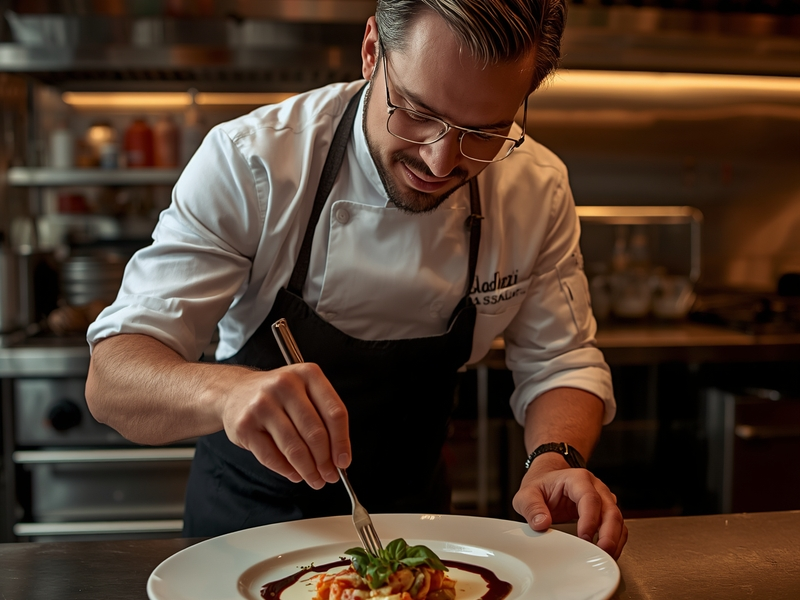

About Our Restaurant
Welcome to Ulivo! Fresh and local perfect food for you.
Vision & Mission
Vision To be the favorite local neighborhood gathering place where every guest feels like family sharing a meal in Italy.
MissionTo serve authentic, heartwarming Italian comfort food made with fresh ingredients and true old-world hospitality.
Our History
Founded in 2024, Ulivo started as a small bistro on Beach Road, Negombo.Driven by a passion for traditional Italian recipes, it quickly grew into a favorite dining spot for both locals and travelers
Location & Services Offered
Location:Located at Beach Road, Negombo, Sri Lanka.
Services
- Dine-in (Indoor & Outdoor seating)
- Takeaway Services
- Home Delivery
- Table Reservations & Special Events
Management & Head Chef
Led by our dedicated management team and Head Chef Italian Chef , who brings over 15 years of culinary experience, we ensure exceptional service and food quality.
Meet our Head Chef

Our Head Chef brings years of traditional culinary expertise to prepare handcrafted pasta, wood-fired pizzas, and classic desserts.